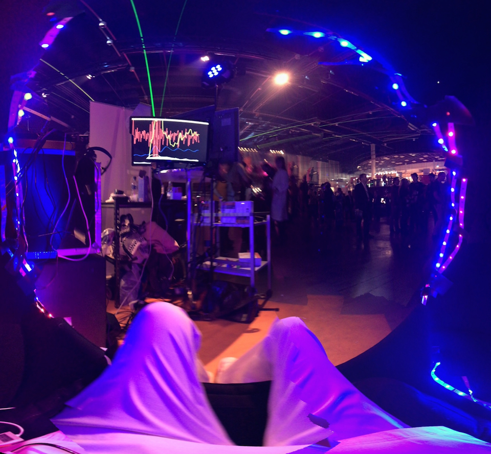
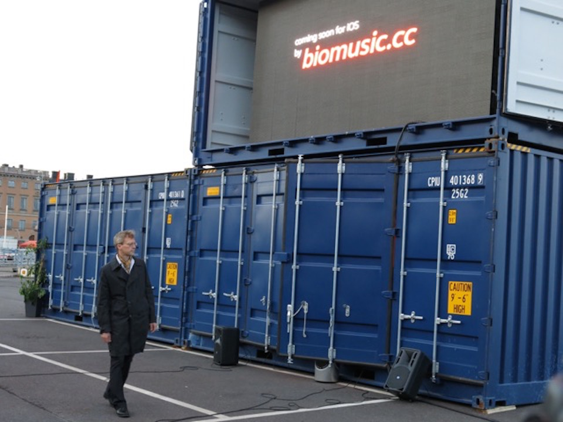

We hear a new world of sound that is ever present, ever changing and one that we own, since it originates within us.
We are creating the sound of the 2020's today - collaborative, contextual, behaviouristic biomusic: informed by nature, made possible though science, we create possibilities for anyone with a pulse to enjoy an emergent, authentic and personally satisfying experience that goes beyond music and genres, straight to the body and directly to the brain.
We would like you to join us in our musical quest to unite people, places and things in a new, infinite world of sound.
Sign up for the beta here
Beddit tracks your sleep using a thin film cardioballistography sensor on the mattress. We prototyped and created different smart alarm versions and sleep musification models. The product was adapted to be used for sonification and visualisation of biosignals at marketing events.
 Beddit demo, Slush 2014.
We are currently developing our first iOS application, an adaptive sonification environment for everyday activities.
 Helsinki Design Week 2015.
Producing expressive and entertaining music based on biosignal measurement is an interesting research topic. We have so far published one paper on our technology, at the 11th International Symposium on Intelligent Data Analysis in October 2012.
Paalasmaa, J., Murphy, D. J. & Holmqvist, O., 2012. Analysis of Noisy Biosignals for Musical Performance. 11th International Symposium on Intelligent Data Analysis (IDA 2012). Lecture Notes in Computer Science 7619. pp. 241-252. Springer, Heidelberg. download PDF – doi: 10.1007/978-3-642-34156-4_23
{% include footer.html %}